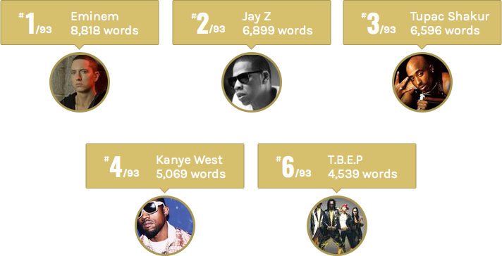
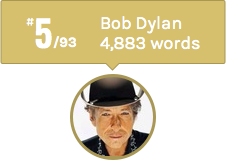

Ever since I read the excellent The largest vocabulary in hip hop I wanted to do a similar analysis across a more generalised list of musicians. I stumbled across this List of best-selling music artists and it seemed to cover a good cross section of popular musicians and genres.
These are the 93 artists that will be a part of this analysis.
The aim is to compare the vocabulary and the lyrical density of these musicians. Some of them have released a lot more songs than others because of the sheer longevity of their career and how prolific they are.
 To prevent the vocabulary size from being skewed purely by the number of songs released, the vocabularies are compared across the 100 densest songs (by total words) that they have released till date. Only 6 of these musicians have released less than 100 songs so it is a good threshold. Also, 100 songs comprises 8 to 10 albums of music which would span at least 5 to 10 years of work which should truthfully mimic the overall vocabulary and lyrical style of the musician.
Some definitions:
Vocabulary: The number of unique words (across any language) used by a musician in their 100 (or less) densest songs. [this should be highlighted in some way]
Lyrical density: The total number of words (across any language) used by a musician in their 100 (or less) densest songs. [highlight]
Learning rate: On average, the number of words after which a new word is used by the musician. This is the ratio of Lyrical density/Vocabulary. If it is low it means new words are learnt faster.
To prevent the vocabulary size from being skewed purely by the number of songs released, the vocabularies are compared across the 100 densest songs (by total words) that they have released till date. Only 6 of these musicians have released less than 100 songs so it is a good threshold. Also, 100 songs comprises 8 to 10 albums of music which would span at least 5 to 10 years of work which should truthfully mimic the overall vocabulary and lyrical style of the musician.
Some definitions:
Vocabulary: The number of unique words (across any language) used by a musician in their 100 (or less) densest songs. [this should be highlighted in some way]
Lyrical density: The total number of words (across any language) used by a musician in their 100 (or less) densest songs. [highlight]
Learning rate: On average, the number of words after which a new word is used by the musician. This is the ratio of Lyrical density/Vocabulary. If it is low it means new words are learnt faster.
Mr. OBVIOUS

There are 4 rappers in the list and they obviously are at the top of the vocabulary chart. Amongst them Eminem leads Jay-z, 2Pac, Kanye West and Black Eyed Peas by a big margin. One reason would be that he tends to use more words in his songs than the others. Eminem also has the overall highest words per song ratio of 1018.5
THE FREEWHEELIN'

Given how articulate and descriptive his songs are, it is no wonder Bob Dylan ranks so highly. He also ranks at the top (#11) of learning rate (a brand new word is used by him after every 9th word).